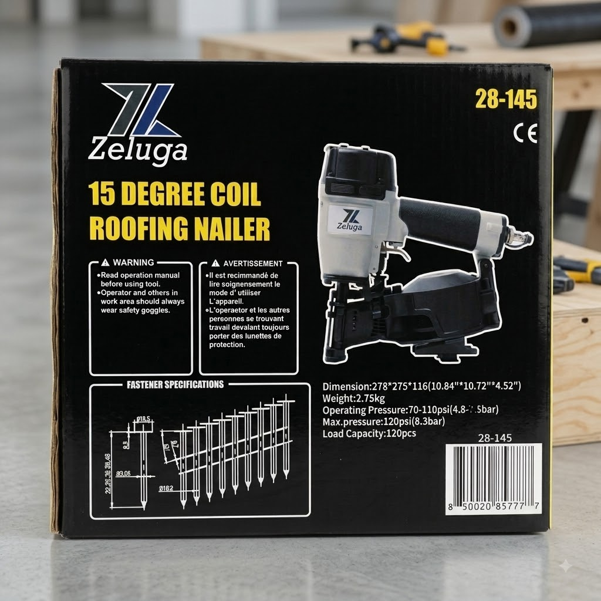
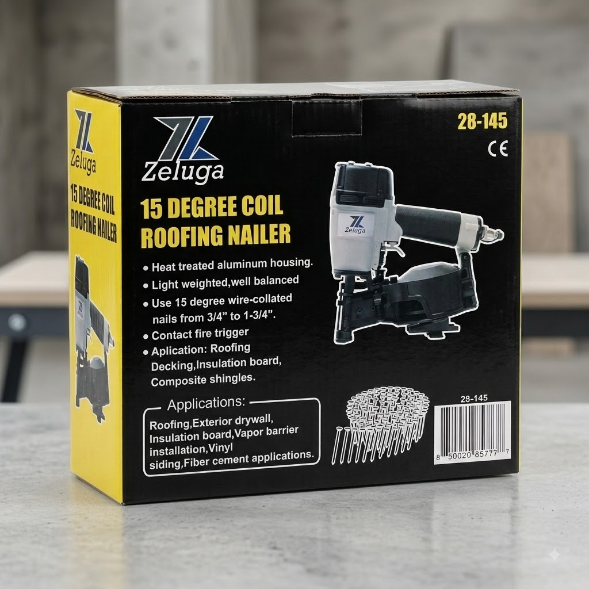

Clavadora neumática de rollo para techo Zeluga 15 grados 28-145
$240.00 USD
🔩 Clavadora de rollo para techo Zeluga 28-145 — ponle ritmo al retecho
Clavadora neumática de rollo a 15 grados para clavo de 3/4 a 1-3/4 de pulgada, con capacidad de 120 clavos por carga. Cuerpo de aluminio tratado térmicamente: fuerte, pero de solo 2.75 kilos para que no te canse el brazo.
✅ Clavo de 3/4 a 1-3/4 de pulgada
✅ Capacidad de 120 clavos
✅ Aluminio tratado térmicamente
✅ Peso ligero de 2.75 kilos
✅ Presión de operación de 70 a 110 PSI
Para teja, cubiertas de madera, aislante, recubrimiento de vinil y fibrocemento. 💪
Pedir por WhatsApp